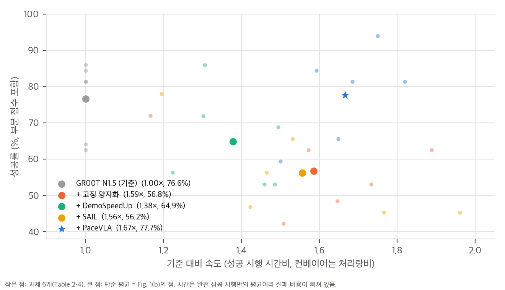
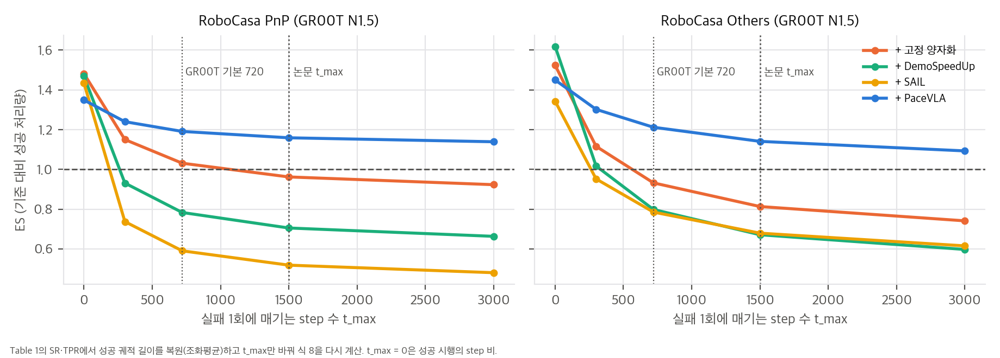
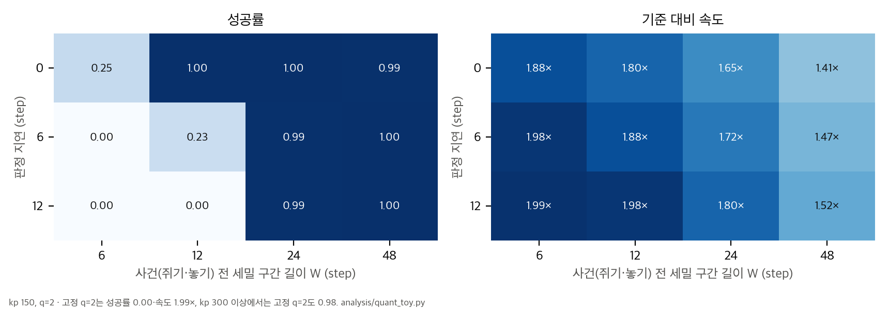

한 줄 요약: 텔레옵 시연을 그대로 따라 하는 VLA는 사람이 조심스럽게 움직인 속도까지 물려받습니다. PaceVLA는 이웃한 행동을 합쳐 명령 수를 줄이는 **시간 양자화(temporal action quantization)**를, 정밀한 구간에서는 끄고 여유 있는 구간에서만 켭니다. 이를 위해 GR00T N1.5의 action expert에 모드별 출력 decoder 네 개를 달고, LVLM이 단 "양자화해도 되는가" 점수로 학습한 판정기(judge)와 라우터가 매 추론 step마다 모드를 고릅니다.
논문이 내세우는 기여는 세 가지입니다(Sec. 1).
관측(카메라, 언어, 고유수용 상태) → VLM(고정) → 조건 특징 Φ_t
│
├─ 평균 풀링 → quantization judge J_ψ → 점수 ≥ δ 이면 "양자화 그룹", 아니면 "세밀 그룹"
│ router (MLP) → 그룹 안에서 모드 k 선택 (α_t)
▼
공유 action expert (DiT, flow matching) — 노이즈 행동 길이 T_k
▼
모드별 MLP decoder D_k → T_k개 명령 (H_k개 시연 step을 덮음, q_k = H_k / T_k)
모드는 K = 4개입니다(부록 C.3, Table 8·9).
| 세밀 모드 (q = 1) | 양자화 모드 | |
|---|---|---|
| RoboCasa, DexJoCo, Franka, OpenArm | (16, 16), (8, 8) | (16, 8), (8, 4) → q = 2 |
| LIBERO | (16, 16), (8, 8) | (16, 9), (8, 5) → q = 1.78, 1.6 |
| ALLEX | (24, 24), (12, 12) | (24, 12), (12, 6) → q = 2 |
따라서 "적응형 시간 해상도"는 연속 값이 아니라 q ∈ {1, 2} 중 하나를 고르는 이진 선택에, 예측 구간 두 가지를 곱한 것입니다. 명령 수로 따진 이론 최대 속도는 2배입니다.
action encoder와 DiT는 모든 모드가 공유하고, 모드마다 출력 MLP decoder D_k만 따로 둡니다. 모드 k는 길이 T_k의 노이즈 행동 열을 처리합니다. 학습 때는 K개 모드의 flow matching 손실(식 1)을 모두 계산합니다. 모드마다 노이즈와 flow 시간을 따로 뽑고, 길이가 다른 목표는 마스크로 평균합니다.
L_policy = E[ Σ_k w_k ℓ_k + λ_sup KL(r ‖ α) + λ_bal L_bal ], r_k ∝ exp(−ℓ_k / β) (식 2)
L_conf = E[ (J_ψ(sg(Φ_t)) − y)² ] (식 3)
L = L_policy + λ_conf L_conf (식 4)
양자화된 명령은 한 주기에 더 큰 변화를 요구하므로 제어기 이득을 올립니다.
| GR00T N1.5 | RoboCasa PnP SR / TPR / ES | Others SR / TPR / ES | LIBERO Short | LIBERO Long | DexJoCo |
|---|---|---|---|---|---|
| 기준 | 52.3 / 1.05 / 1.00 | 72.4 / 2.20 / 1.00 | 97.8 / 8.36 / 1.00 | 89.2 / 3.12 / 1.00 | 76.3 / 1.83 / 1.00 |
| + 고정 양자화 | 49.0 / 1.56 / 0.96 | 63.1 / 2.92 / 0.81 | 91.2 / 12.41 / 1.25 | 82.0 / 4.78 / 1.21 | 63.0 / 1.65 / 0.70 |
| + DemoSpeedUp | 40.3 / 1.15 / 0.71 | 57.3 / 2.77 / 0.67 | 87.7 / 12.09 / 1.14 | 71.6 / 3.91 / 0.90 | 65.7 / 1.75 / 0.76 |
| + SAIL | 32.5 / 0.77 / 0.52 | 58.5 / 2.31 / 0.68 | 95.5 / 10.85 / 1.23 | 79.0 / 3.89 / 1.03 | 60.3 / 1.58 / 0.65 |
| + PaceVLA | 55.0 / 1.64 / 1.16 | 72.9 / 3.30 / 1.14 | 97.1 / 10.95 / 1.27 | 89.2 / 4.27 / 1.26 | 77.3 / 2.22 / 1.11 |
해석 (재계산은 04_claim_verification.md §3과 analysis/table_check.py):
03 §1.2). PaceVLA의 장점은 "더 빠르다"가 아니라 "덜 실패하면서 충분히 빠르다"입니다. 다만 순위가 뒤집히는 t_max는 14–115 step이라, 실패를 조금만 비용으로 쳐도 PaceVLA가 ES 1위입니다.| 과제 (32회) | 기준 SR / 시간 | 고정 양자화 | PaceVLA SR / 시간 | 시간 감소 |
|---|---|---|---|---|
| Pick-and-Place | 81.3 / 12.1 s | 62.5 / 7.7 s | 84.4 / 7.6 s | 37.2% |
| Air Fryer | 81.3 / 24.6 s | 53.1 / 14.2 s | 81.3 / 14.6 s | 40.7% |
| Stack Cup | 84.4 / 35.3 s | 62.5 / 18.7 s | 81.3 / 19.4 s | 45.0% |
| Table Sweeping | 62.5 / 21.9 s | 48.4 / 13.3 s | 59.4 / 14.6 s | 33.3% |
| Pump and Scrub | 64.1 / 30.0 s | 42.2 / 19.9 s | 65.6 / 18.2 s | 39.3% |
| ALLEX Conveyor (50개) | 86% / 3.6개/분 | 72% / 4.2 | 94% / 6.3 | 처리량 1.75배 |

우리 분석: 실물 6개 과제의 성공률 대 속도. 큰 점(6개 평균)이 Fig. 1(b)의 점이다.
| 변형 | SR | TPR | ES |
|---|---|---|---|
| 모드별 decoder 없음(judge가 양자화를 고르면 기준 decoder 출력을 사후에 합침) | 63.3 | 2.44 | 1.00 |
| judge 없음(라우터가 네 모드 중 직접 선택) | 65.1 | 2.01 | 1.01 |
| KL 없음 / Balance 없음 | 63.7 / 64.8 | 2.04 / 2.38 | 0.98 / 1.04 |
| Attention pooling / 마지막 토큰 | 64.6 / 64.2 | 2.38 / 2.43 | 1.04 / 1.03 |
| PaceVLA | 66.9 | 2.75 | 1.14 |
judge와 라우터 때문에 추론이 조금 느려집니다(1.05배). 실패는 대부분 인식 한계에서 오므로, 깊이나 촉각 같은 더 나은 감지가 필요하다고 봅니다(부록 D.3).
03 §2). 논문 과제에는 추적 지연 말고도 접촉 같은 실패 요인이 있으므로 toy를 그대로 옮길 수는 없습니다. 그래도 이득 조정 없이 같은 비교를 해야 기여를 분리할 수 있습니다.재계산 스크립트는 analysis/table_check.py(표·본문·Fig. 1(b), 결과 table_check_results.json)와 analysis/quant_toy.py(SO(3) 집계, 추적 toy, ES의 t_max 의존성, 결과 quant_toy_results.json)입니다. 모두 numpy·scipy 단일 스레드로 CPU에서 10초 안에 끝납니다.
식 7과 8을 나란히 쓰면 다음과 같습니다(SR = s, 성공 시행의 step 수 t_i).
TPR = (1/N) Σ [ S_i / t_i − (1 − S_i) / t_max ] = s · E[1/t | 성공] − (1 − s)/t_max
ES = T_base / T, T = L + (1 − s)/s · t_max, L = E[t | 성공]
첫 식에서 성공 궤적 길이의 조화평균 L_h = s / (TPR + (1 − s)/t_max)를 복원할 수 있습니다. L 자리에 L_h를 넣어 ES를 다시 계산하면 Table 1·3의 36칸이 모두 ±0.005 안에서 맞습니다(LIBERO Short는 t_max 220·280·300의 평균으로 근사). 따라서 두 지표는 내부적으로 일관되고, 성공 시행의 길이 분산도 작다고 볼 수 있습니다.
| 열 | 기준 L_h | PaceVLA L_h | 기준 T 중 실패 몫 | 성공률만 바뀐 경우 | 속도만 바뀐 경우 | 둘 다(보고 ES) |
|---|---|---|---|---|---|---|
| RoboCasa PnP | 382 | 284 | 78% | 1.087 | 1.060 | 1.159 (1.16) |
| RoboCasa Others | 304 | 209 | 65% | 1.016 | 1.121 | 1.141 (1.14) |
| LIBERO Long | 268 | 199 | 19% | 1.000 | 1.263 | 1.263 (1.26) |
| DexJoCo | 384 | 326 | 55% | 1.031 | 1.073 | (1.11) |
Table 1의 SR·TPR에서 L_h를 복원하고(원래 t_max = 1500으로), t_max만 바꿔 식 8을 다시 계산했습니다.

| RoboCasa PnP | t_max 0 | 300 | 720 | 1500 | 3000 |
|---|---|---|---|---|---|
| 고정 양자화 | 1.48 | 1.15 | 1.03 | 0.96 | 0.92 |
| DemoSpeedUp | 1.47 | 0.93 | 0.78 | 0.71 | 0.66 |
| SAIL | 1.44 | 0.74 | 0.59 | 0.52 | 0.48 |
| PaceVLA | 1.35 | 1.24 | 1.19 | 1.16 | 1.14 |
설정: 2차원 손끝이 60 Hz 시연 경로(곡선 도달 → 쥐기 → 운반 → 놓기, 240 step)를 따라갑니다.

| kp | 기준 q=1 | 고정 q=2 | 적응형 W=12, d=0 | W=12, d=6 | W=24, d=12 | W=48, d=0 |
|---|---|---|---|---|---|---|
| 150 | 0.995 / 1.00× | 0.00 / 1.99× | 1.00 / 1.80× | 0.23 / 1.88× | 0.995 / 1.80× | 0.995 / 1.41× |
| 300 | 0.975 / 1.00× | 0.985 / 1.99× | 0.975 / 1.80× | 0.99 / 1.88× | 0.99 / 1.80× | 0.995 / 1.41× |
(성공률 / 기준 대비 명령 수 비)
해석:
스텝마다 축이 무작위인 회전 증분(크기 θ) q개를 두 방식으로 합쳐, 결과 회전의 차이를 쟀습니다. 첫째는 회전 벡터를 그냥 더하는 방식, 둘째는 순서대로 곱하는 방식(공간 증분 규약)입니다. 조건마다 400회 반복했습니다.
| q | θ = 0.01 rad | 0.03 rad | 0.1 rad |
|---|---|---|---|
| 2 | 0.0025° (0.3%) | 0.022° (0.9%) | 0.25° (3.1%) |
| 4 | 0.0046° (0.4%) | 0.040° (1.3%) | 0.46° (4.2%) |
| 8 | 0.0097° (0.7%) | 0.088° (2.1%) | 0.98° (6.6%) |
(오차 중앙값, 괄호는 합성 회전 크기 대비 비율)
PaceVLA/pacevla.github.io @ 86424ec)PaceVLA에는 웹페이지 저장소 하나뿐이고, iclr-pacevla/iclr-pacevla는 익명 심사용 웹페이지 사본입니다. 그래서 코드 대조 대신 표·그림 재계산과, 관련 공개 코드(SAIL 지표 함수, VLASH 양자화 루프, GR00T RoboCasa 과제 표) 대조를 했습니다.| 항목 | 논문에 있음 | 비고 |
|---|---|---|
| 모드 구성 (H_k, T_k) | ✅ | Table 8·9 |
| 손실 가중치·온도·최소 모드 확률·optimizer | ✅ | Table 7 |
| 양자화 집계 규칙 | ✅ | 부록 A, 식 5·6 |
| 벤치마크별 LVLM 프롬프트 | ✅ | 부록 E 6종 |
| judge 임계값 δ | ❌ | "δ 이상이면 양자화 그룹"이라고만 적혀 있음 |
| 체크별 점수 가중치, 프롬프트의 "계산한 사실" | ❌ | 부록 C.5에 "fixed weights", "computed facts"만 있음 |
| 과제별 k_p 선택 절차와 과제별 값 | ❌ | {150, 300, 600} 중 과제별로 고른다고만 적혀 있음 |
| decoder 구조(층 수, 폭), 라우터·judge 크기 | ❌ | "lightweight MLP" |
| 시뮬레이션 시행 수·시드 | ❌ | 표 수치에서 과제당 50회로 역산(C8) |
| 실물 시행 수 | ✅ | 32회, 컨베이어는 5회 × 10개 |
| 학습 데이터 라벨(점수 y) | ❌ | 공개되지 않음 |
| 코드·체크포인트 | ❌ | 미공개 |
| # | 주장 (출처) | 확인 | 판정 |
|---|---|---|---|
| C1 | Table 5는 RoboCasa 24개 과제 평균 (캡션) | Table 1의 PnP 8 + Others 16 가중 평균이 SR 66.93, TPR 2.747, 풀링 ES 1.141 → Table 5의 66.9 / 2.75 / 1.14. 과제 구성은 GR00T 저장소 표로 확인 | ✅ |
| C2 | TPR(식 7)과 ES(식 8)의 정의 | SR·TPR·t_max만으로 ES 36칸을 ±0.005 안에서 재현(03 §1) |
✅ 내부 일관 |
| C3 | "ES above 1× in all but one setting" (Sec. 4.2) | PaceVLA ES 9칸 중 1 미만은 RLDX-1 PnP 0.93 하나 | ✅ |
| C4 | "largely preserves the success rate" | 기준 대비 SR 차이가 −3.5 ~ +2.7%p이고, 모두 유의하지 않음(PnP p = 0.48, Others 0.87, DexJoCo 0.85) | ✅ (유지는 맞고, 향상은 아님) |
| C5 | 굵게 표시한 best (Table 1) | 가속 방법 중 PaceVLA가 1위인 칸: SR 8/8, ES 7/8, TPR 2/8. TPR은 6칸에서 고정 양자화나 DemoSpeedUp이 더 높음 | ⚠️ "효율 개선"은 ES 기준일 때만 성립 |
| C6 | 실물 수치(Sec. 4.2): Franka 37–45%, OpenArm 33–39% 단축, 고정 양자화 −28.2·−21.9%p, 컨베이어 3.6 → 6.3(1.75배), 최대 1.8배 | 37.2 / 40.7 / 45.0%, 33.3 / 39.3%, 28.2 / 21.9%p, 1.750배, 최대 시간비 1.82(Stack Cup) | ✅ |
| C7 | Fig. 1(b) "averaged over six real-world tasks" | 다섯 점이 6개 과제 단순 평균과 SR ±0.1%p, 속도 +0.02× 안에서 일치. 단, 축 이름 "over demonstration"과 캡션 "over the base VLA"가 다르고, 시간비(5개)와 처리량비(1개)를 섞어 평균함 | ✅ 수치 / ⚠️ 표기 |
| C8 | 시행 수 | 실물 이진 과제 k/32, 부분 점수 과제 k/64, 컨베이어 k/50에 모두 맞음. 시뮬레이션은 과제당 50회(PnP 400, Others 800, DexJoCo 300)가 모든 값을 설명하는 최소 수 | ✅ (시뮬레이션 n은 역산) |
| C9 | 컨베이어 "improving success rate from 86% to 94%" | 43/50 vs 47/50, Fisher p = 0.32 | ⚠️ 유의하지 않음 |
| C10 | 추론 비용 1.05배, 약 2 ms (Table 6) | 42.15 / 40.07 = 1.052, +2.08 ms | ✅ |
| C11 | 전용 decoder가 사후 양자화보다 정확 (Table 10) | 보고값만 있음. MSE 평균 0.0218 vs 0.0294로 방향은 일관 | – 검증 불가(코드 없음) |
| C12 | judge가 필요하다 (Table 5a) | judge 제거 시 TPR 2.75 → 2.01, ES 1.14 → 1.01. 단일 시드 | ⚠️ 경향 |
| C13 | 고정 양자화 기준선 = VLASH [30] | VLASH run.py는 (step_count + 1) % action_quant_ratio == 0일 때만 행동을 전송. 식 5(블록 끝값)와 같은 동작 |
✅ |
| C14 | TPR은 SAIL을 따름 | SAIL throughput_regret_agg_fn과 식이 같음. 단위는 다름(SAIL은 시뮬레이션 시간 초 × 60, PaceVLA는 행동 step 수 × 10⁻³) |
✅ |
| C15 | 컨베이어 과제 설명 | 본문 "라벨이 앞을 보게", 부록 C.1 "컨베이어에서 하역 테이블로", 지시문 "바코드 위로, 컨베이어 위에" | ⚠️ 서로 불일치 |
| C16 | 시간 양자화 이론 최대 속도 | q = 2(LIBERO 1.6–1.78)이므로 명령 수 기준 최대 2배. 실물 1.50–1.82배, 시뮬레이션 성공 시행 step 비 1.18–1.45 | 참고 |
| C17 | v1 → v2 변경 | 본문 동일, Fig. 2 조건 화살표만 수정(첫 블록 Cross + Self → 두 블록의 Cross) | 참고 |
자세한 내용은 03_analysis.md에 있습니다.
03 §1.1): t_max = 1500에서 기준 모델 "성공 1건당 step" 중 실패 몫이 PnP 78%, Others 65%, DexJoCo 55%입니다. ES는 성공률 유지에 크게 좌우됩니다.03 §1.2): 실패 비용이 0이면 PnP에서 세 기준선이 모두 PaceVLA보다 빠릅니다. 순위가 뒤집히는 t_max는 14–115 step입니다.03 §2): 추적 이득이 낮으면 적응형만 성공하고, 세밀 구간이 짧을수록 판정 지연에 민감합니다. 이득을 올리면 고정 양자화도 성공합니다. 그래서 과제별 이득 조정은 교란 변수입니다.03 §3): q = 2에서 회전 벡터 단순 합과 SO(3) 합성의 차이는 스텝당 0.03 rad이면 0.02°입니다. 올바른 처리지만 성능을 가를 요소는 아닙니다.03 §4): PaceVLA의 시간은 고정 양자화의 0.92–1.10배입니다. 시간을 완전 성공 시행만으로 재서 실패 비용이 빠져 있습니다.불가능합니다. 코드, 체크포인트, quantizability 라벨이 공개되지 않았습니다. 논문에도 δ, 체크 가중치, 과제별 k_p, decoder 크기가 없어서, 코드가 나오기 전에는 같은 수치를 기대할 수 없습니다.
| 구성 요소 | 공개 여부 | 난이도 | 메모 |
|---|---|---|---|
| 기반 VLA (GR00T N1.5, RLDX-1) | ✅ Apache-2.0 | – | GR00T 저장소 README(c56f541, 현재 N1.7 기준): 추론은 VRAM 16 GB 이상 GPU, 미세조정은 40 GB 이상 GPU 권장, CUDA 12.8과 flash-attn 설치 |
| 시간 양자화 목표 만들기 (식 5·6) | 직접 구현 | 낮음 | 수십 줄. delta 행동은 제어기 좌표로 되돌린 뒤 합치고 다시 정규화 |
| 모드별 decoder (공유 DiT, 길이 T_k) | 직접 구현 | 중간 | GR00T action head의 행동 토큰 길이·위치 임베딩·마스크를 모드마다 다르게 다뤄야 함 |
| 라우터, judge, 식 2–4 | 직접 구현 | 낮음 | MLP 두 개와 손실 세 개 |
| quantizability 라벨 | 프롬프트만 공개 | 높음 | 과제마다 고정 양자화를 먼저 실행해 단서를 얻고, LVLM으로 데이터 전체를 라벨링해야 함. 가중치와 "계산한 사실"을 직접 정해야 함. 상용 API를 쓰면 데이터가 외부로 나가고 비용이 듦 |
| 제어기 이득 조정 | 절차 미공개 | 중간 | 과제별 k_p 탐색이 필요 |
| 벤치마크 (RoboCasa, LIBERO, DexJoCo) | ✅ | 낮음 | MuJoCo 기반. 시뮬레이션 자체는 CPU로 돌지만 정책 추론이 무거움 |
| 기준선 (VLASH, DemoSpeedup, SAIL) | ✅ 코드 공개 | 중간 | SAIL은 논문처럼 바꿔 재구현해야 같은 비교가 됨 |
| 단계 | 가능 여부 | 근거 |
|---|---|---|
| 표·그림 재계산, ES 분해, 지표 toy | ✅ 완료 | table_check.py, quant_toy.py (numpy, 10초 이내) |
| 작은 flow matching chunk 정책으로 fine/quantized decoder + judge 재현(저차원 toy 과제) | 조건부 | torch 설치(MPS)가 필요해서 설치 승인을 받아야 함. 시간은 수십 분 예상 |
| 부록 E 프롬프트로 시연 몇 개를 라벨링해 Fig. 4 같은 점수 곡선 확인 | 조건부 | LVLM API(데이터 외부 전송, 비용)와 RoboCasa 시연 일부 다운로드가 필요해서 승인이 필요함 |
| GR00T N1.5 + PaceVLA 미세조정, RoboCasa 24개 평가 | ❌ | CUDA GPU(40 GB 이상 권장)와 미공개 코드가 필요 |
| 실물 과제 | ❌ | Franka, OpenArm, ALLEX 하드웨어 |
요약: 아이디어의 골격(모드별 decoder + 라우터 + 판정기)은 짧고 다시 구현하기 쉽습니다. 성능을 좌우할 부분은 두 가지입니다. 첫째는 판정 라벨을 만드는 과정으로, 과제별 사전 실행, LVLM 질문지 설계, 전체 라벨링이 필요합니다. 둘째는 과제별 제어기 이득 조정입니다. 둘 다 논문에 절차 일부만 공개되어 있습니다. 같은 수치를 원하면 코드 공개를 기다려야 하고, 아이디어를 시험하려면 작은 정책으로 "고정 양자화 + 이득 조정"과 "적응형"을 같은 이득에서 비교하는 것이 가장 싼 출발점입니다.
번호 [n]은 논문 참고문헌 목록의 순서(알파벳순, 본문 표에 쓰인 번호와 같음)입니다. arXiv ID는 논문 참고문헌에 적힌 값입니다. SAIL의 지표 함수, VLASH의 양자화 실행 루프, GR00T 저장소의 RoboCasa 과제 표는 코드를 직접 확인했습니다(§4). 나머지 논문은 따로 열어 검증하지 않았습니다.
[action chunking 정책]
ACT [36] → Diffusion·flow matching action head → GR00T N1.5 [5], RLDX-1 [18] (VLM + flow matching DiT)
│ chunk를 시연과 같은 시간 해상도로 예측
▼
[시연보다 빠르게 실행하기]
├─ RL로 다듬기 SpeedTuning [34] — 전체가 고르게 빨라지는 경향
├─ 데이터를 가속 DemoSpeedup [13] arXiv:2506.05064 — proxy 정책의 행동 엔트로피로 구간별 다운샘플링
├─ 실행 시 조절 SAIL [2] arXiv:2506.11948 — 운동 복잡도·그리퍼 사건으로 정해진 속도 사이 전환
└─ 시간 양자화 Figure AI Helix 물류, VLASH [30] arXiv:2512.01031 — chunk를 고정 비율로 합침
▼
[모드를 고르는 라우팅]
Switch Transformer [10] · MoH [15] · MoLe-VLA [35] (층 건너뛰기) · Mixture of Horizons [16] arXiv:2511.19433 (여러 horizon을 gate로 융합)
▼
★ PaceVLA: 시간 해상도와 horizon이 다른 decoder 중 하나를 상태마다 고름 (LVLM 라벨로 학습한 judge + 라우터)
차별점 요약: DemoSpeedup과 SAIL은 "어디서 빠르게 할지"를 행동 통계(엔트로피, 운동 복잡도, 그리퍼 사건)로 정합니다. 고정 양자화는 궤적 전체에 같은 비율을 씁니다. PaceVLA는 그 결정을 장면을 보고 정책이 직접 하게 하자는 것입니다. 다만 그 판단의 학습 신호는 사람(그리고 Claude)이 설계한 LVLM 질문지에서 옵니다(01 §4.2-1).
| 역할 | 출처 | 이 논문에서의 쓰임 |
|---|---|---|
| 기반 VLA | GR00T N1.5 [5], RLDX-1-IMG [18] arXiv:2605.03269 | VLM 고정, action expert·decoder·라우터·judge 학습 |
| flow matching | Lipman et al. [21] arXiv:2210.02747, DiT [28] | 식 1 |
| 시간 양자화 규칙 | VLASH [30]의 action_quant_ratio (코드 확인: 매 q번째 행동만 전송) |
절대 행동은 블록 끝값(식 5), delta는 SO(3) 합성(식 6) |
| 고정 양자화 기준선 | VLASH [30] | 기준 모델 출력에 q = 2 |
| 가속 기준선 | DemoSpeedup [13], SAIL [2] | SAIL은 재구현(delta 행동, action scheduling 끔) |
| 효율 지표 TPR | SAIL [2] metric_fn.py의 throughput_regret_agg_fn |
식 7. SAIL은 시뮬레이션 시간(초)에 분당 단위를 쓰고, PaceVLA는 행동 step 수와 ×10⁻³ 단위를 씀 |
| 효율 지표 ES | Dex-Net의 MPPH [23] | 식 8, 실패에 t_max를 매김 |
| 라우터 균형 손실 | Switch Transformer [10] | L_bal |
| 실시간 chunking | RTC [6] | ALLEX 컨베이어에서만 비동기 추론 |
| 벤치마크 | RoboCasa [26], LIBERO [22], DexJoCo [32] arXiv:2605.16257 | RoboCasa 24개 = PnP 8 + Others 16 (GR00T 저장소 표로 확인) |
| 라벨링 모델 | Claude Opus 5(기준 설계), Gemini 3.8 Flash(전체 라벨링) | 부록 C.5, E |
| 논문 | 관계 |
|---|---|
Chronos Policy (chronospolicy/) |
둘 다 "정책이 시간을 어떻게 다루는가"의 문제입니다. Chronos는 관측과 행동의 물리 시각을 time-aware RoPE로 넣어 센서 주기·지연의 변화에 강하게 만듭니다. PaceVLA는 같은 시간 축에서 명령 간격 자체를 바꿉니다. PaceVLA의 양자화 모드는 행동 하나가 덮는 실제 시간을 2배로 바꾸는데, 정책은 그 차이를 decoder 번호로만 압니다. Chronos식으로 행동마다 실행 시각을 넣으면 decoder 여러 개 대신 연속적인 실행 간격을 표현할 수 있을 것입니다(내 해석). |
AW-0 (agentic_wam/) |
AW-0은 코드·subgoal 계획 스트림을 행동과 함께 생성합니다. PaceVLA의 judge가 보는 것도 "지금 어떤 국면인가(도달, 쥐기, 운반, 놓기)"입니다. 계획 스트림이 이미 있는 정책이라면 별도의 LVLM 라벨 없이 국면 정보를 judge 입력으로 쓸 수 있습니다(내 해석). |
Hydra-0 (hydra0/) |
행동 표현을 바꾸는 연구입니다. Hydra-0은 공간 표현(이미지 평면의 점 궤적)을 바꾸고, PaceVLA는 시간 해상도를 바꿉니다. |
DexPolicy (dexpolicy/) |
둘 다 "정밀한 국면과 여유 있는 국면은 다르게 다뤄야 한다"는 문제의식입니다. 다만 DexPolicy는 RL 학습 중의 탐색 잡음을 학습 step 함수로 줄이고, PaceVLA는 추론 시 실행 해상도를 상태 함수로 바꿉니다. |
Contact-Grounded Policy (contact_grounded_policy/) |
PaceVLA의 실패 분석(부록 D.3)은 "접촉 영역이 가려져서"라고 결론짓고 촉각 입력을 제안합니다. CGP처럼 촉각을 쓰는 정책에서는 접촉 시작 신호를 judge 입력으로 직접 쓸 수 있습니다. |
gh api 확인)| 저장소 | 무엇인가 | 공식 여부 | 라이선스 | ★ | 마지막 push | 확인 커밋 |
|---|---|---|---|---|---|---|
| PaceVLA/pacevla.github.io | 프로젝트 웹페이지(영상, 결과 표 이미지). 코드 없음 | 공식 | 표기 없음(페이지 하단에 CC BY-SA 4.0 문구) | 0 | 2026-10-28 | 86424ec |
| iclr-pacevla/iclr-pacevla | 익명 심사용 웹페이지 사본(2026-09-24 생성). 현재 페이지와 저자 표기만 다름 | 공식으로 보임 | 표기 없음 | 0 | 2026-09-26 | 4ef81f5 |
| NVIDIA/Isaac-GR00T | 기반 VLA GR00T N1.5 | 구성 요소 공식 | Apache-2.0 | 8,280 | 2026-10-28 | c56f541 (examples/robocasa/README.md) |
| RLWRLD/RLDX-1 | 기반 VLA RLDX-1 | 구성 요소 공식 | Apache-2.0 | 355 | 2026-09-09 | cf67c31 (메타데이터만) |
| mit-han-lab/vlash | 고정 양자화 기준선 [30] | 공식으로 보임 | Apache-2.0 | 514 | 2026-04-22 | 22cbabf (vlash/run.py) |
| lingxiao-guo/DemoSpeedup | 기준선 DemoSpeedup | 공식으로 보임 | MIT | 30 | 2025-09-10 | 34bd43a (메타데이터만) |
| nadunRanawaka1/SAIL | 기준선 SAIL, TPR 정의 | 공식(프로젝트 페이지 링크) | MIT | 11 | 2026-07-19 | 1440c16 (metric_fn.py) |
| Timsty1/MixtureOfHorizons | 가장 가까운 관련 연구(ICML 2026) | 공식으로 보임 | 표기 없음 | 68 | 2026-05-04 | 5da3500 (README만) |
| Physical-Intelligence/real-time-chunking-kinetix | RTC | 공식 | MIT | 631 | 2025-12-08 | 9296f31 (메타데이터만) |
| DaivdYuan/SpeedTuning | RL 가속 관련 연구 | 공식으로 보임 | MIT | 17 | 2026-08-11 | b4a4cfc (메타데이터만) |
| RoyZry98/MoLe-VLA-Pytorch | MoLe-VLA | 확인 못 함 | MIT | 70 | 2025-07-31 | 8ae45f8 (메타데이터만) |
| robocasa/robocasa | 벤치마크 | 공식 | NOASSERTION | 1,848 | 2026-10-28 | dc73a8c (메타데이터만) |
| Lifelong-Robot-Learning/LIBERO | 벤치마크 | 공식 | MIT | 2,488 | 2025-03-15 | 8f1084e (메타데이터만) |
| brave-eai/dexjoco | 벤치마크 DexJoCo | 공식으로 보임(이름·시기 일치) | MIT | 239 | 2026-10-15 | 8d23b0f (메타데이터만) |
gh search repos PaceVLA 결과는 위 두 웹페이지 저장소뿐이었습니다.refs/에 있습니다(gitignore). sail_metric_fn.py, gr00t_robocasa_README.md, vlash_README.md, vlash_run.py입니다.--max-episode-steps 720 --n-action-steps 8입니다. 논문은 t_max = 1500을 씁니다(03 §3).| 주제 | 관련성 | 근거 수준 |
|---|---|---|
| AWE: Automatic Waypoint Extraction (Shi, Sharma, Zhao, Finn, 2023) | 시연을 "선형 보간으로 복원 가능한 최소 waypoint"로 압축합니다. 시간 해상도를 구간마다 다르게 두는 비균일 양자화의 데이터 쪽 버전입니다. PaceVLA의 LVLM 라벨 대신 재구성 오차 기준으로 "합쳐도 되는 구간"을 정하는 대안이 됩니다. | 내 사전 지식. 서지 확인 필요 |
| Options / macro-action (Sutton et al., 1999) | 여러 step을 하나의 결정으로 묶는 시간 추상화의 고전 틀입니다. PaceVLA의 모드는 길이가 정해진 option입니다. | 내 사전 지식 |
| 사건 기반 제어·적응 샘플링 (제어 이론) | 오차가 커질 때만 명령을 갱신하는 고전 기법입니다. judge 대신 추적 오차나 접촉 사건으로 세밀 모드를 켜는 규칙 기반 대조군이 될 수 있습니다. | 내 해석 |
| Bidirectional Decoding (BID) | chunk를 샘플링할 때 이전 chunk와의 일관성과 미래 예측을 함께 봐서 chunk 길이의 trade-off를 다룹니다. | 내 사전 지식. 서지 확인 필요 |
한계: 5절의 서지 정보는 내 사전 지식에 근거합니다. 블로그나 git에 올리기 전에 원문을 확인해야 합니다.